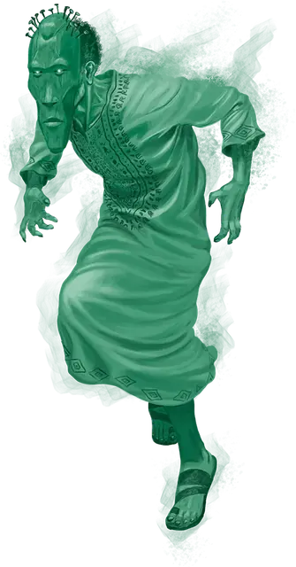

Хэйнт
Haint
Средняя Нежить, обычно нейтральная

Класс Доспеха 12
Хиты 75 (10к8 + 30)
Скорость 30 футов, летая 30 футов (парит)
| мод | спас | ||
|---|---|---|---|
| СИЛ | 7 | −2 | −2 |
| ЛОВ | 15 | +2 | +2 |
| ТЕЛ | 17 | +3 | +3 |
| мод | спас | ||
|---|---|---|---|
| ИНТ | 10 | +0 | +0 |
| МДР | 13 | +1 | +1 |
| ХАР | 17 | +3 | +3 |
Навыки Обман +6, Скрытность +8
Сопротивление урону звук, кислота, огонь, электричество; дробящий, колющий, рубящий от немагических атак
Иммунитет к урону некротическая энергия, холод, яд
Чувства тёмное зрение 60 футов, пассивное Восприятие 11
Языки все, известные при жизни
Опасность 7 (2900 опыта)
Бонус мастерства +3
Особенности
Бестелесное перемещение. Хэйнт может перемещаться сквозь других существ и предметы, как если бы они были труднопроходимой местностью. Оно получает урон силовым полем 5 (1к10), если оканчивает ход внутри предмета.
Натура нежити. Хэйнту не нужен воздух, еда, питьё и сон.
Действия
Мультиатака. Хэйнт совершает две атаки Скорбным прикосновением.
Скорбное прикосновение. . Рукопашная атака оружием: +6 к попаданию, досягаемость 5 футов, одна цель. Попадание: 21 (4к8 + 3) урона психической энергией.
Смена формы. Хэйнт волшебным образом принимает облик гуманоида, которым он был в жизни, сохраняя при этом свою игровую статистику. Он возвращается в истинный облик если его хиты уменьшаются до 0 или использует действие для его завершения.
Бонусные действия
Общая скорбь. Хэйнт нацеливается на одно существо, которое он может видеть в пределах 60 футов, у которого хиты ниже максимума, разделяя свои собственные мучения с этой страдающей душой. Цель должна преуспеть в спасброске Мудрости Сл 14, иначе станет недееспособна.
Существо может повторять спасбросок в конце каждого своего хода, оканчивая на себе действие эффекта в случае успеха. Если спасбросок существа успешен или эффект для него заканчивается, существо становится невосприимчивым к Общей скорби хейнтов в течение следующих 24 часов.
Описание
Восставшие из скорбных мертвых, хэйнты - это духи, которые меняют свой облик в мрачную имитацию того, чем они когда-то были. Хэйнт может перейти из своей призрачной формы в физического Гуманоида, которым он был при жизни, превращаясь в живое существо. Эти духи могут ошибочно считать невинных людей теми, кто их убил, или умолять смертных отомстить за них.